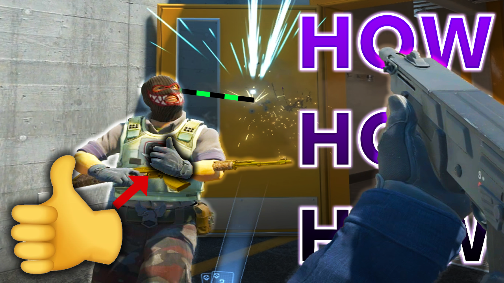
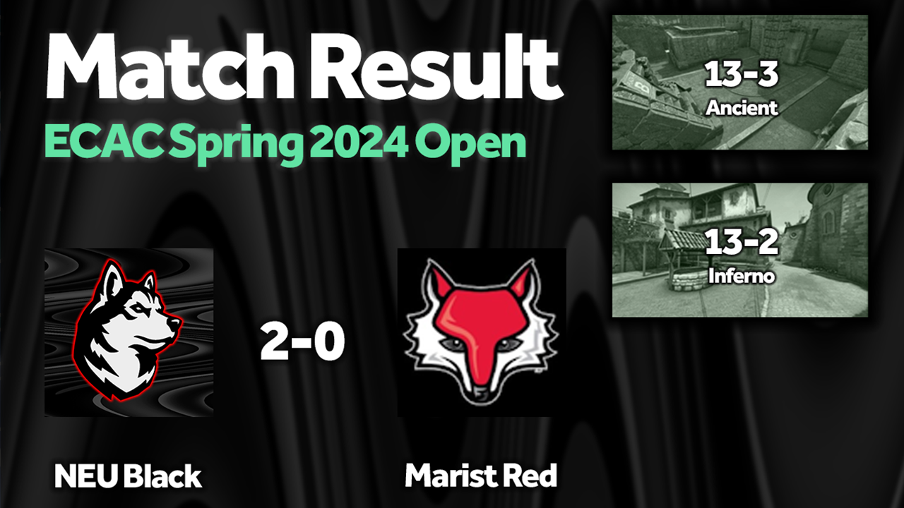
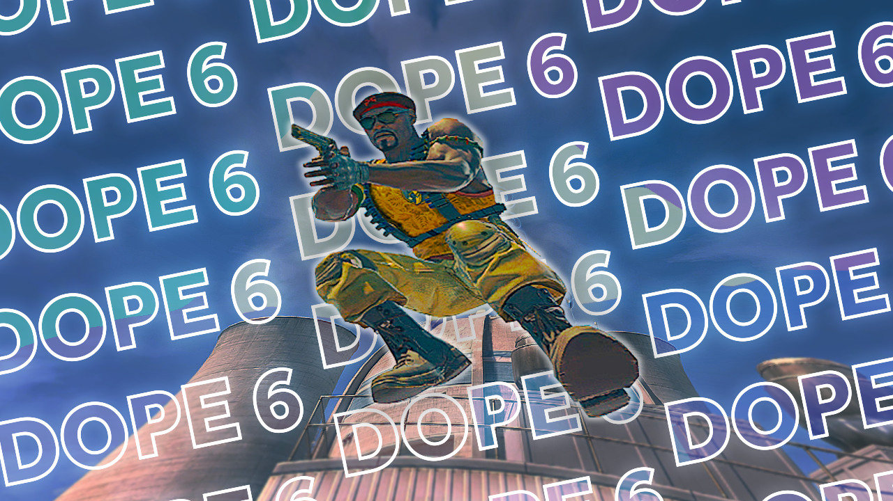
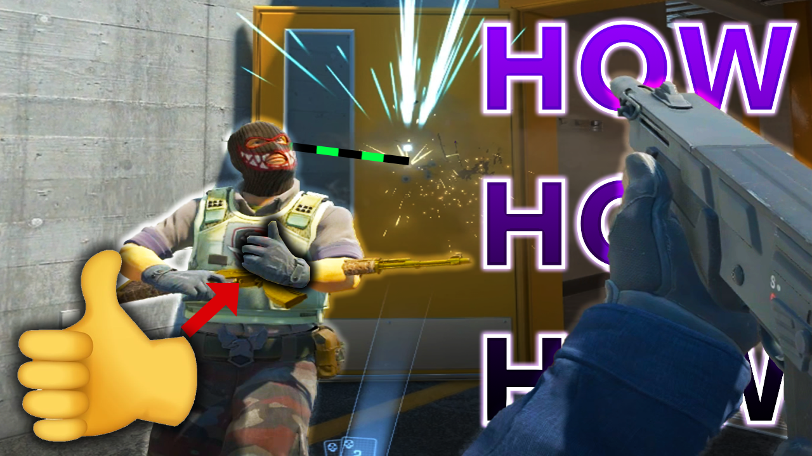
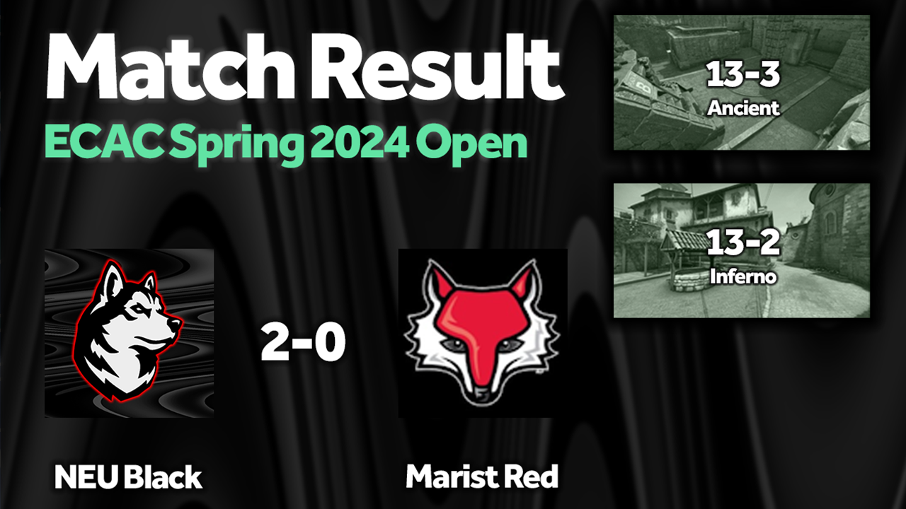
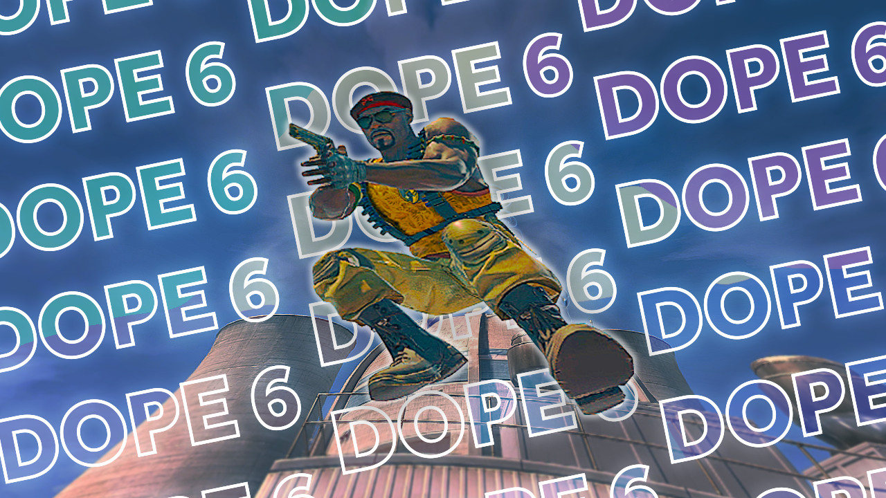

I was introduced to the Counter-Strike franchise in 2016 by a friend. Since then, I've found a niche in movement
and youtube, where I've been regularly uploading videos for the past couple of years. For personal and
professional reasons, I won't be sharing my youtube channel.
Most mature rated games are, frankly, mature in nature, which I don't find appropriate to share in a
professional context. I have no problem sharing my videos with friends, though I still have concerns about
trust, safety, and privacy online which I consider on an individual level. I'm building a brand, perhaps a
personality, to entertain others online. I like making people happy, and even if nobody watched my videos, I
would still make them. I love what I do, and I don't want to compromise that. Further explanation on my reasoning
I hope you understand my cautious approach.
I am currently the captain for Northeastern's Counter-Strike Black roster, which has 9 players and participates in
three leagues. Last year, I was co-captain of White team.
Black currently functions as the second team as there are too many players.


 





Graphic design is a skill I picked up in highschool and have continued to develop over the years. I'm fluent with most of the Adobe suite, and currently put my skills to use for myself and friends' work on youtube. Above is a sample of some of the youtube thumbnails I created for my videos (and some of my friends).
I began making videos in middleschool, mostly with and for my friends. Vegas Pro 20 is my preference, but I have
experience using Final Cut, Davinci Resolve, Premiere Pro, After Effects, C4D, and many more. I am a hobbyist, but I
take pride in my work and do my best to develop my skillset.
I leveraged my knowledge to create promotional content for the happy bee honey club, a nonprofit organization I
volunteered for in highschool.
More recently, I worked with some friends from a ski trip to develop promotional media for a new skiing product we
are developing. This is still very much in the works as of January '24, but I will do my best to update this page as
we move along.
I also make skiing videos for my family and friends to enjoy on facebook.